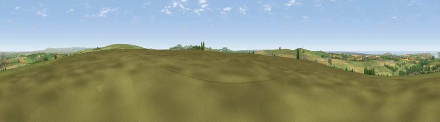

Viewpoint near St Issey
#3144 in England · top 6% of its area beats it · near St Issey · open accessWhere it is
The exact computed spot (SW 92775 68400). Click the marker for map links.
Public access: this spot lies on mapped open-access land (CRoW Act 2000) — you may roam here on foot. Computed from Natural England's CRoW access layer and OpenStreetMap rights of way — not the legal definitive map. Always verify locally.
The view, rendered

A 360° render of this exact spot computed from the terrain model, tree cover and land cover — summer colours, afternoon light, calibrated against photographs of famous viewpoints. Real trees, hedges and buildings will differ in detail.
The panorama
Grey silhouette: terrain skyline in each direction (720 bearings, Earth curvature and refraction included). Dashed green: skyline with trees (+15 m) and buildings (+8 m) as obstacles. Blue strip: how far the ground is visible on each bearing.
Where the view opens
Wedge length = distance to the farthest visible ground on that bearing (vegetation-aware). Rings at 10, 25 and 50 km.
What fills the view
54% grassland · 28% cropland · 9% water · 6% woodland · 2% built-up
Angular shares of the visible panorama (visual magnitude), not map area. Landscape diversity 0.51 (0–1 Shannon).
Key numbers
More beautiful places nearby
The staircase of upgrades: each row has a higher view potential than everything closer. Driving times are estimates from straight-line distance, calibrated against real road routing — check an actual route before setting out.
| Place | Direction | Drive | Score |
|---|---|---|---|
| Viewpoint near Tremayne | E · 2 km | ~5 min | 74.2 |
| Viewpoint near St Eval | WSW · 3 km | ~7 min | 78.3 |
| Penhale Hill | S · 11 km | ~21 min | 80.3 |
| Viewpoint near Roche | SSE · 12 km | ~22 min | 80.9 |
| Treviscoe Hill | S · 12 km | ~22 min | 81.8 |
| Viewpoint near Nanpean | SSE · 13 km | ~24 min | 84.2 |
| Viewpoint near Stenalees | SE · 13 km | ~24 min | 88.0 |
| Viewpoint near Crackington Haven | NE · 33 km | ~51 min | 88.1 |
50.47869, -4.92211 · source: screening · position refined by local search. Computed location — check access rights before visiting.